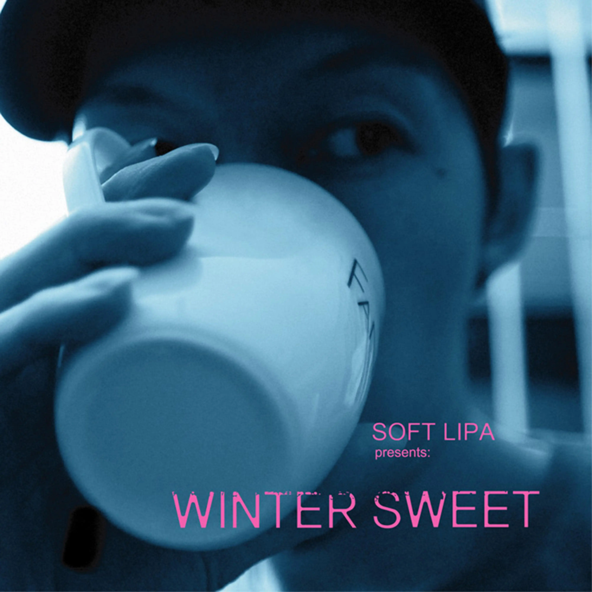

Album#48
Winter Sweet
{kind=link}

专辑信息
- 专辑名称： Winter Sweet
- 歌手： 蛋堡 Solf Lipa
- 年份： 2009-12-31
- 时长： 50:47

如果音樂也講究時令，夏日炎炎有「收斂水」可以消暑，冬夜漫漫也能有一種暖呼呼的音樂可以補冬多好。蛋堡就想做這樣的一張專輯，將冬日裡的溫暖素材全都釀在一個罈子裡，取名叫 Winter Sweet。
這張專輯就像一張電影原聲帶，由四段美好的故事構成，有青澀年代少年的煩惱，有夜裡螢幕和鍵盤之間傳遞的曖昧對白，有眾人耳目下偷偷來往的綿密簡訊，而最後由一個熱戀期裡的冬天早晨開始的生活點滴，證實冬天裡最暖的溫度不是懷爐，而是生活裡的甜蜜。
既然分享了 收斂水，那把 Winter Sweet 也分享一下好了，這張我也挺喜歡的。
專輯裡有很多好聴的鋼琴旋律，依然融入了爵士元素，整體聴起來也是比較舒緩的。有几首曲子沒什麼詞，主要是器樂演奏，中間還穿插了三首對話切片，這樣專輯聴起來不會讓耳朵太累，全都是說唱的話，有時也會覺得噪，就像 收斂水 裡唱的「拿歌曲來舉例 / 太多兇悍的攤販 / 佔據耳道卻沒有人取締」，适當放一些輕鬆點的曲子，「收斂太多吵鬧的節拍」。
很喜歡那三首「後來的切片」，我覺得是這張專輯的灵魂。為什麼叫「後來」而不是「從前」呢，毕竟是在從前录󠄃下來的吧？我也不知道，也許是因為這些切片都是在很久的「後來」才翻出來处理吧。「後來的切片」用簡單的吉他和弦伴奏，兩個人說著一些日常對話，俏皮可愛，在對話後又有著好聴的旋律，給人一種美好温暖的感覺。聴著覺得這兩人也太甜了，有時也會忍不住跟著他們一起笑起來。
除此之外，我最喜歡的是 夜聊 、 偷偷 和 Winter Sweet 。
如果你喜歡類似「後來的切片」歌
可以聴聴這些：
對白：
- Answering Machine by 陶喆
- 喜宴 by Aliosha
- 对白一：长岛冰茶 by 查可欣
念白/獨白：
- 千禧曼波 2001 by Aliosha
- 不再让你孤单 by 撒娇
- Louis Vuitton SoundWalk by 舒淇 (有粵語和普通話兩個版本)
故事：
- Album#43 - 天使音乐 (Hint Notes)::恐龙形状的物体
- 床边故事 by 四枝筆 Four Pens
TRACKLIST
少年維持著煩惱
(悠悠揚起 回憶歌聲 我忍不住想告訴妳一段 用青春歲月譜寫出來的 故事…)
他常要猶豫很多選擇 頭髮的長度 鞋子的顏色
他常要面對很多抉擇 舒服的床鋪 或老師的臉色
他常要背很多單字 增進了程度 拼英文的檢測
有時會遇上一些麻煩 回家的長路 是埋伏和險惡
他常常 坐在圍牆上看火車經過
他常常翻開報紙查本週星座
他常常發呆 在重要時候
所以每件事都反覆確認 以防有聽錯
他徬徨 關於一些把握或錯過 或懊悔 有心無心的過錯
不喜歡囉嗦 有時比較少講話
看著書 聽著歌 幻想著長大
那少年維持著煩惱
專心在他的煩惱
微不足道的煩惱
那少年維持著煩惱
專心在他的煩惱
微不足道的煩惱
當然他有他的煩惱 有時是沒法 有時是不想去趕跑
比如說懂自己的人多麼難找
好學校多難考 和愛戀的纏繞
喜歡的女生 他等待著回應
家裡的規定 愛情這時是違禁
一星期兩次 她補習班的背影 在夜裡 畫面一直重播不會停
寫成一首詩 他投稿在校刊
佐青澀的文字 是青春的套餐
他了解少年不怕累 老人怕爆肝
不懂人長大愛孤獨 小時怕落單
而處於 這個似懂非懂的年紀
和屬於未來 瑣碎的成熟相比
他想得太多 顯得不切實際
他覺得沒有人懂 是寂寞的十七
那少年維持著煩惱
專心在他的煩惱
微不足道的煩惱
那少年維持著煩惱
專心在他的煩惱
微不足道的煩惱
他多想跳過現在的生活 沒想過多年後卻發現這成為鄉愁
他很在乎承諾 沒想過多年後 沒比較多連絡
他還不能看透 心裡的妒火 在多年後都只是路過
他還沒法掙脫 懂的詞不多 沒法去對誰訴說
他想複製成熟的樣板 沒想過會感嘆流失的浪漫
期待幸福和美滿 沒想過有天在鞋盒遺忘愛情的遺憾
他也沒想過 會當過壞人
沒想過會懷念懵懂和單純
只單純地 專心在他的煩惱
微不足道的煩惱
那少年維持著煩惱
專心在他的煩惱
微不足道的煩惱
那少年維持著煩惱
專心在他的煩惱
微不足道的煩惱
(用青春歲月譜寫出故事…)
少年虽然不叫 維特 但也有他的煩惱。
後來的切片 之ㄧ
什麼比如
就是你在鬧脾氣要吃很貴的
照你這麼說下來你有吃宵夜的打算哦
怎麼說我們今天也才吃兩餐ㄋㄟˋ
你有想逃避第三餐嗎
那我們第三餐要吃什麼
淡水現在過去 大概也...
清粥小菜嘍
蛤～好吧...
不難吃啊 也不便宜欸
所以你説小李子嘍
我們可以吃通化夜市的清粥小菜
這樣可以回家搬東西
給房東鑰匙
你現在回去房東也睡啦
房東不是常常打麻將什麼的到很晚
我可以傳給簡訊給他
反正不管怎麼樣明天要給人家鑰匙也是要今天把它清空
要不然你假裝傳給簡訊跟房東告白 看他會不會
色性大發
我現在一個人在房間
我覺得要離開你好捨不得～
這是最後一夜 你要上來陪我嗎
好欸
房東先生一看就 哈哈哈賺死了賺死了
怎么会有这么好的事
赚死啦 ... 色痞
我不知道
白天自由,夜晚寂寞
我發現一個人非常寂寞
夜聊(你說,我說) feat. 李英宏
兩個日子的交界 氣氛比較迷幻
晚上醒著 早上睡我比較習慣
沒有目的的夜車需要陪伴
在音樂和咖啡填不滿的夜晚
渲染著光 工作是沒有進展的慌
手把滑鼠緊握不放
上下滾動的帳號是過目不忘
也有熟的也有陌生人
你狀態像是在說恨
我吐舌說「怎麼?」 你說「別多問」
我說「真的很生氣不然去潑糞」
這只是丟出一個梗 不算太過分
你說「靠邀! 是想聽爆料吧?」
我說「不妨說出來當治療」
你說「蛋醫師你好」 我戴起眼鏡說「你好」
這是我們 第二次聊
一個人的夜晚 誰和誰陪伴
看到她也在 就有安全感
兩個人的夜晚 對白都在螢幕和鍵盤
曖昧得很簡單
講到自己 我們講故事
聊到找房子 我們聊佈置
我說我有點躁鬱 你說你也是
沒人聽你說的誤會 我聽你解釋
我說「這是什麼?」 你說是好聽的歌
你說「收就對了! 這個樂團我推薦!」
我說「那想不想看李安的新片?」
「喔對 你有沒有去春吶呢今年?」
四點之後有點餓
在天亮之前 我講話有點色
但色得有點 有時互開玩笑試探底線
有時把暗示藏在問題裡面
聊到激情過後 動物會感傷
我說「激情過後」 我說「張清芳」
「所以這麼愛做 我們是傷心幫!」
你說「傷身幫吧!愛過才傷心幫」 哈
一個人的夜晚 誰和誰陪伴
看到她也在 就有安全感
兩個人的夜晚 對白都在螢幕和鍵盤
曖昧得很簡單
很多事適合夜晚 不能早起聊
你說不管什麼都可以找你聊
當我說我在吃夜宵 你說你也要
當撒嬌成了制約 就沒解藥
有時候好給小 即使隔天要早起
在腦裡失了盤算 還是要找你
逃避著 斷了聯繫的各種可能
說到底 產生了依賴卻沒有責任
話說得深 情流露得真
有時「哈哈」是假的 掩飾著乾
因為怕沒有回應 所以慢慢地試探
爭辯著價值觀 分享著自傳 分享著沒有聲響的呢喃
也開始交代對方要吃飯 因為相同經歷而覺得默契對
所以把握每次 像怕再沒機會
一個人的夜晚 誰和誰陪伴
看到她也在 就有安全感
兩個人的夜晚 對白都在螢幕和鍵盤
曖昧得很簡單
看到你十分鐘前的笑臉 我說「HI」
你說「剛剛去哪?」 我說「我都在」
你說「在幹嘛?」 我說「在偷菜」
你說「先洗個澡」 我說「拜託快」
你說「要睡了 眼睛睜不開…」
你說「別太想我」 我說「I won't cry」
你說「☾𖤓︎︎」 我說「Night!」
你改了狀態 好像在說愛
夜裡螢幕和鍵盤之間傳遞的曖昧對白，很精準地描寫了那種曖昧感。
後來的切片 之二
誰說的 為什麼
因為他這個就是這裡買的沒錯啊
怎麼辦都過期了啦～ 哎呦好想哭喔～
我也想哭欸
誰叫你每次晚上都要去吃什麼薑母鴨那種東西
就沒有人理那些餅啊
啊啊啊對不起...
我對不起這些餅
我告訴你 我現在還是要吃
我對不起我麻麻
我也對不起你媽媽 沒有把你顧好
那你的風味如何
味道上我覺得是還 okay 啊
那什麼上是不 okay
精神上
精神上覺得
好像... 怕怕的
我覺得啊...
有些保存期限是怕不新鮮
但它一定其實還可以吃
就實際上它十月底才壞
可是它九月底就不新鮮了
他說不定有提早
那我們就來祈禱那個
做餅的商人有這麼好心
不只是做餅的啊我覺得只要是保存期限很多都是這樣
因為你不可能到 那一天就 立刻 瞬間壞掉
那那一天的前一天怎麼辦？
前一天是慢慢壞嗎
那表示前一天也不能吃啦～
他如果到十月十號過期
就是十月九號都還狀態很好
然後十月十號就突然 就 boom 這樣
那它怎麼知道時間
對啊 奇怪吧
那我們看到十月十號過期 我們九號趕快吃的話 那難道...
對不對 這個值得深思欸
以後這些食品都要放在
不能跟月曆放在一起
他們看到月曆就會知道自己要壞掉
他們如果都不知道時間的話他們就不會壞掉
喔我覺得這個蛋黃味道怪怪的
真的嗎 真的嗎
就硬硬的 可是甜甜的
蛋黃酥不是本來就蛋黃硬硬的嗎
那換你吃 哈哈哈～可惡～
你吃 我不管
你也要吃
真是好甜好可愛的兩人。
過期的食物想起了 重慶森林 裡的經典臺詞。
摘录
我们分手的那天是愚人节，所以我一直当她是开玩笑，我愿意让她这个玩笑维持一个月。从分手的那一天开始，我每天买一罐 5 月 1 号到期的凤梨罐头，因为凤梨是阿 May 最爱吃的东西，而 5月 1 号是我的生日。我告诉我自己，当我买满 30 罐的时候，她如果还不回来，这段感情就会过期。
金城武 ：啊，请问有没有 5 月 1 号到期的凤梨罐头？
收銀員 ：今天几号啦？
金 ：4 月 30 啊
收 ：是啊，明天过期的东西我们不会摆出来的。
金 ：还有两个钟头，这么早就收掉了？
收 ：过期的东西没人要的，人家要买也要买新鲜的。
金 ：新鲜新鲜，什么新鲜啊？就是你这种人啦，喜新忘旧的。喂，弄一罐凤梨罐头要花多少心血你知道吗？又要种，又要摘，又要切，你说不要就不要啊？你有没有想过罐头的感受？
收 ：先生，我只是职员，我负责卖东西的，你叫我去想罐头的感受？！你有没有想过我的感受？又要抬，又要搬，还要负责扔，我也希望那些罐头永远不会过期，我还省功夫呢？你那么爱过期罐头是吗？我这里有一箱，全送给你，不收你钱！
金 ：啊，请问有没有 5 月 1 号到期的凤梨罐头？
- 不知道从什么时候开始，在什么东西上面都有个日期，秋刀鱼会过期，肉罐头会过期，连保鲜纸都会过期，我开始怀疑，在这个世界上，还有什么东西是不会过期的？
- 終于在一家便利店，让我找到第 30 罐凤梨罐头。就在 5 月 1 号的早晨，我开始明白一件事情，在阿 May 的心中，我和这个凤梨罐头没有什么分别。
- 不知道算不算是一个记录，那一天晚上，我吃掉所有的凤梨……那三十罐凤梨罐头吃得我的胃非常得不舒服，所以我跑到一家酒吧，因为听说酒可以帮助消化。有一首歌叫作 “日出时让恋爱终结”，我现在的心情就是这样，怎么样才可以让我忘记阿 May 呢？我跟我自己讲，从这一分钟开始，第一个进来的女人，我就会喜欢她。
- 如果記憶也是一個罐頭的話，我希望這罐罐頭不會過期；如果一定要加一個日子的話，我希望它是一萬年。
食物過期了我一般就扔了，虽然浪費，但是吃壞了身體生病了更麻煩。不過他們說得好像也很有道理欸！食物肯定不是到了過期日期突然壞的，保存得好的話，就算過期了，短期內應該也是能吃的，只是品質就沒那麼好了。
偷偷 feat. 閻韋伶
這是三分鐘之內的第五通
訊息透露了我們關係不普通
他們跟蹤像懷疑我會武功
懷疑我 經營著曖昧你是股東
實際上 我們傳了一整天
一整夜 我把電話放枕邊
手指按著按鍵 明著暗戀
換了換電池 我又打了一整篇
這時還不算熱戀期
我的邀約 我們的測驗題
害羞對我來說 應該留在上個世紀
但關於公開 我還欠練習
喔 除此之外 沒有什麼沒講開
慢慢來我不搶拍
事情明朗之前 先不講愛
只是不想太招搖不是不表態
當我在偷偷地看著你1
You're so beautiful
You're so beautiful
當你也偷偷地看著我
這一刻 我覺得 我能懂得
這是我們的快樂
事情發展至此 我們有些共識
那些期待和心跳難以控制
睡前和起床都互相通知
曖昧的小店發展成公司
特別好約 特別乾脆
對我的關心 特別安慰
連出入都像班對 更別說 特別多兩人的餐會
而且你很香 每次聞到我就心癢癢
但在他們面前 卻又不能講
有時 想要偷親又被打槍
看著有人親近 我又不能嗆
這些他們不知道 他們用猜的
他們賊賊地問 我們總說「沒有啦!」
甜蜜地否認 找不到的佐證
我們的眼神 就只有我們懂
當我在偷偷地看著你
You're so beautiful
You're so beautiful
當你也偷偷地看著我
這一刻 我覺得 我能懂得
這是我們的快樂
當我們一起上課
當我們一起唱歌
當我們一起快樂
欸! 脖子上的紅斑是蚊子咬的嗎?
他們不曉得吧? 你聽誰講的啦!
他們總是笑著把小事放得那麼大
說我會勃起 因為你穿得那麼辣
我有時不作表示 因為心虛
或是用力咬字 表達情緒
你的姐妹知情但帶有疑慮
因為他們不知道 這是情趣
我們是印象派 喜歡個大概
喜歡朦朧 不喜歡 spot light
喜歡閉嘴 心事不喜歡外帶
我們的喜歡是細水 but more than one night
當我在偷偷地看著你
You're so beautiful
You're so beautiful
當你也偷偷地看著我
這一刻 我覺得 我能懂得
這是我們的快樂
怕不會就是夜聊的那個對象吧。
夜聊 和 偷偷 很好地抓住了愛戀時那種相互吸引和曖昧的感覺。
慢慢來
背景中阿嫲說的「咖慢诶啦」是閔南語，就是「慢一點啦」的意思。
後來的切片 之三
我們倆要自己吃
ㄟ等於這樣的話
我們就不知道我們到底先壞哪一個 所以...
整體性啊 這整盒都過期了
是 是嗎？
對
哪裡有芋泥啊騙人
啊 你少來
你如果 你如果是覺得??你就直講
不要隨便說哪裡有芋泥
你打開為什麼還是黑的
芋泥不應該紫色嗎？
造成我心裡壓力
這樣可以還 還可以回我家搬東西嗎？
能啊
就是如果確定幫我就把...房東…把
房東給鑰匙
（打斷）啊你把這盒餅送房東
可惡啊你以為房東沒眼睛嗎？
啊把日期(給它)撕掉
你讓那個...
我們這樣搬走已經很不好意思了
還給人家過期的餅
哈哈哈
怎麼會這樣
哈哈哈哈哈
哎呀應該給討厭的人
「ㄟ我們那個有人送我們餅欸」這樣
啊我們這樣一個一個送的就沒有日期ㄌ
真的 我跟你講
那個你知道煙也會過期啊
恩阿
然後我爸爸那邊他就是都會
每次那個免稅店他就會賣一堆煙
然後就放到過期他自己都不知道
然後有一次他就是 叫我拿去送人
然後我就說：「這個過期了啦」
嗯 他就：「嘖 沒關係啦」
就這麼一包一包...
不是他就把那個
把那個 把旁邊那個
有日期的地方明明是印在上面的
然後把那片包裝撕掉
把那個煙盒 整條的包裝撕掉
然後這樣...
好機車哦——
哈哈哈哈哈
Winter Sweet
醒在一個冬天的早上
空氣冰冷 剛沖的可可好燙
得趕在鬧鐘起床之前
把吐司放進烤箱 奶油味道好香
喔當然 沒忘記幫你準備一份
看你睡得香甜 先讓你多睡一陣
在等待的時間 我先轉個電視
抱著新的熱水袋 來自昨天的夜市
鬧鐘起床也把你叫醒
現在你眼中我像模糊的倒影
你甜甜地笑 揉了揉眼睛
最喜歡看你這惺忪的表情
輕輕親了額頭 輕聲說聲早安
多好 這種珍貴媲美國寶
享用早餐之前 先沖個熱水澡
這種甜值得日夜祈禱 我祈禱
這是我們的 Winter Sweet
屬於你的我的 Winter Sweet
這是我們的 Winter Sweet
屬於你的我的 Winter Sweet
一樣是白天 出太陽的中午
一樣能吐著白煙的那種溫度
我喜歡冬天 是厚重的打扮
路上的人 我們這對最好看
灰色的帽 T 我配點紫色
你白色的毛衣適合純粹的此刻
喔是的 這氛圍有著傳說中的電影感
今天的幸福堪稱我們的電影版
捧著你的手 我呼了口熱氣
能讓你溫暖怎麼做我都樂意
這樣的一天不用刻意去設計
那想要去哪裡 你別跟我客氣
在今天人不多 因為氣溫驟降
讓我們穿梭這冰冷大街小巷
而不管這是第幾波的鋒面南下
這是最甜蜜的寒假
這是我們的 Winter Sweet
屬於你的我的 Winter Sweet
這是我們的 Winter Sweet
屬於你的我的 Winter Sweet
開了暖爐 躲在厚厚的棉被裡
點上蠟燭 在這深深的黑夜裡
讓整個房間漫著暖暖的黃色
淡淡的香氣 我懶懶地賴著你
決定在這夜晚放點爵士
來慶祝這個不是節日的節日
反正棉被裡沒事 不如來點加分題
用彼此的體溫 加熱我 加熱你
至於明早的馬桶坐墊一樣會很冰
明早的街道一樣沈默又冷清
但當你醒來一樣會有杯巧克力
會有場熱水澡 會有身體乳液
會有護唇膏 它放在我口袋裡
滋潤我軟嘴唇 這是我最得意
為這小品電影 唱我新的 beat
嚐最甜的蜜 我們的 Winter Sweet
這是我們的 Winter Sweet
屬於你的我的 Winter Sweet
這是我們的 Winter Sweet
屬於你的我的 Winter Sweet
陪你陪你 把時間給你給你2
溫度給你給你 把糖給你給你
陪你陪你 把時間給你給你
溫度給你給你 把糖給你給你
Winter Sweet…
編曲前半段聴起來有種冷冷的感覺，而中間「開了暖爐 躲在厚厚的棉被裡」，添上了薩克斯，就感覺暖了一些。
温柔浪漫的一首。
再做一次好夢
让我再做一次好梦～
让我再做一次好梦～
让我再做一次好梦～
让我再做一次好梦～
让我～
让我～
让让让让让我～
让让让让让我再做一次好梦～
让让让让让我再做一次好梦～
让让让让让我再做一次好梦～
让我～
让我～
让让让让让我再做一次好梦～
让让让让我～
让让让让让我再做一次好梦～
脚注:
當你愛我時
你的眼睛便時時來尋找我的
當你恨我時
你的眼睛便留心將我的躲避
這一對淡褐的敏感的眸子
原是你靈魂的觸鬚
從他們的方向我可以探知
你靈魂每刻的消息
想到了 Album#47 - 收斂水::給你一個吻，「給我一個吻」「給你給你」。